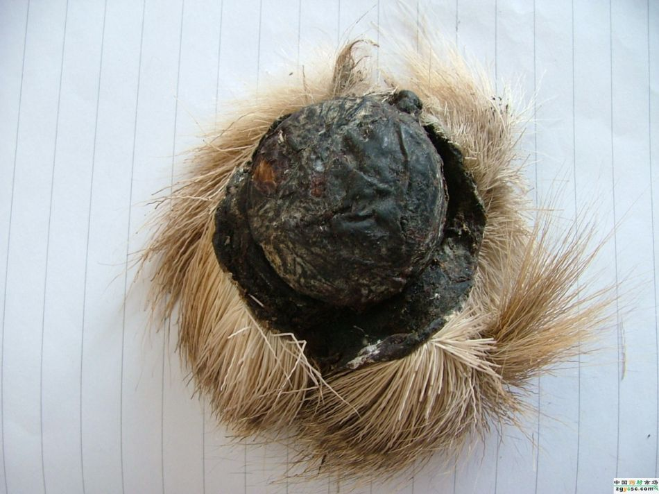

麝香
起源:麝香是脊索动物门哺乳纲麝科动物的成熟雄体香囊中的干燥分泌物，是制造香水的原料之一。 它在固态时具有强烈的恶臭，用水或酒精高度稀释后有独特的动物香气。

功效:改善睡眠，兴奋心脏，兴奋子宫，抗菌消炎，抗肿瘤。
市场:早年，麝香主要是野生林麝所产，后来野生数量急剧下降，到2014年世界自然基金会估算全国野生林麝下降到不足5万头。为满足市场需要开始人工养殖，目前，养殖区域主要集中在陕西、四川、山西、甘肃、河南、安徽等，全国总存栏在15000头左右，年产麝香不足100公斤，而国内一年消耗量在1000公斤以上，缺口很大。
养生价值
用雪莲花泡酒喝，对风湿类风湿及肾虚引起的腰膝酸软，性功能衰退，妇女月经不调痛经，崩漏均有很好的疗效。